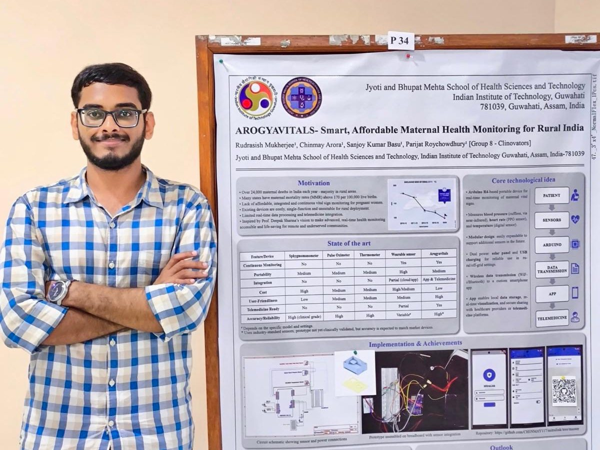

Projects
Pipelines and prototypes, with the source in the open
Everything here is on GitHub under an MIT license, with a README that says what the code does and where it falls short.
R · DESeq2 · Bioconductor
TCGA-BRCA pipeline
PAM50 subtyping, subtype-specific differential expression, surfaceome filtering and co-expression on TCGA breast cancer data. Published as an early build of the thesis work, with its false positives documented rather than hidden. Repo → Bash · Python · RBulk RNA-seq pipeline
About 60 GB of raw reads from GEO GSE106305 taken from FASTQ to differential expression and pathway enrichment: SRA Toolkit, FastQC and MultiQC, Trimmomatic, HISAT2 against GRCh38, SAMtools, Qualimap, featureCounts, then DESeq2 and ReactomePA in R. Repo → Flutter · DartMitraLink
The Android app for the Arogyavitals monitor: logs vitals offline, exports records to Excel and links users to the eSanjeevani telemedicine portal. I led the software for the project. Repo → Arduino · C++Arogyavitals firmware
Arduino Uno R4 WiFi firmware reading pulse, body temperature and blood pressure and serving the latest values as JSON over Wi-Fi. Repo → Qiskit · scikit-learnQuantum SVM for collision risk
A quantum support vector classifier with a ZZFeatureMap kernel on the Aer simulator, benchmarked against a classical RBF-kernel SVM, built as the final challenge of an eight-week quantum machine learning course. Repo →The final thesis pipeline is deliberately not public while the work is being prepared for possible publication.
In depth
Arogyavitals — a maternal-health monitor for rural India
Built in the Product Design & Prototyping Laboratory at JBMSHST, IIT Guwahati, by Team Clinovators: four students from pharmacy, biotechnology and electronics. A portable Arduino-based device measuring blood pressure, heart rate and body temperature, with solar, battery and USB-C power for off-grid use, paired with an Android app.


- I led software development: MitraLink, a Flutter app written in Dart, which receives readings over Wi-Fi, logs vitals offline, exports to Excel and links to eSanjeevani.
- Estimated bill of materials of ₹5,528 — over 40% below the reported cost of the comparable published Lvital device (Dese et al., HardwareX, 2022).
- The live device-to-app connection was demonstrated with a separate companion app that is not published; merging both into one package was the team's goal and remains unfinished.
- A coursework prototype. It is not a medical device and has not been clinically validated.